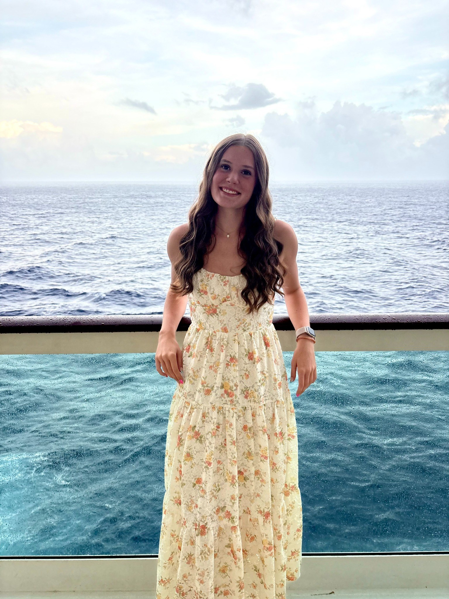
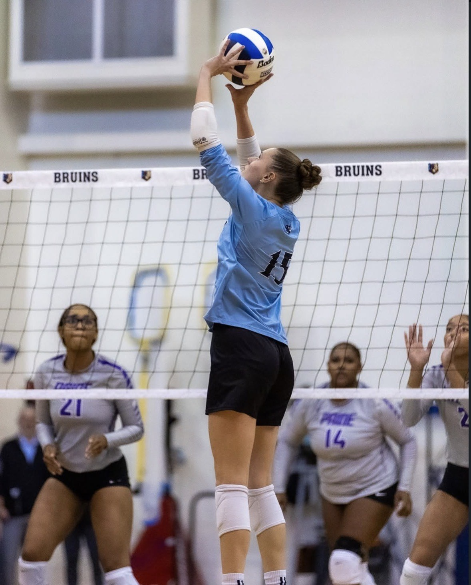

My faith
I'm a Christian, and I strive to show the love of Christ through the way I live and treat the people around me.
A little about me
I'm from Greenville, South Carolina, and I'm a junior at Bob Jones University studying Business Administration. I love being active, spending time with the people closest to me, and finding creative ways to make the most of every day.

Greenville, South Carolina
Who I am
Some of the things that matter most to me are the people in my life, the opportunities I have, and the chance to encourage others.
I'm a Christian, and I strive to show the love of Christ through the way I live and treat the people around me.
I'm a junior at Bob Jones University, where I'm majoring in Business Administration and continuing to learn and grow.
People often describe me as kind, athletic, and funny. I enjoy bringing energy, encouragement, and a little humor wherever I go.
Outside the classroom
I enjoy trying different activities, getting outside, being creative, and spending quality time with friends and family.

I'm a captain for the Bruins volleyball team at BJU. I love playing sports and being part of a team, and volleyball has helped shape my love for encouraging others and working toward a common goal.
Explore BJU Bruins athleticsHiking, swimming, and staying active are some of my favorite ways to spend time.
I enjoy doing nails and all kinds of crafts. I love having a creative project to work on.
Whether it's watching movies or simply hanging out, I love making memories with friends and family.
Looking ahead
In the future, I hope to become a volleyball coach and work with young kids who want to grow in their sport. I want to help them build their skills, enjoy the game, and develop the same love for volleyball that I have. More than anything, I hope to be someone who encourages them both on and off the court.
Find out more
Here are two links to learn more about my university and its athletic program.
Learn more about the university where I'm studying Business Administration.
Follow Bruins athletics and learn more about the teams and competitions.
I'm glad you stopped by to learn a little about me. I hope you have a great day!